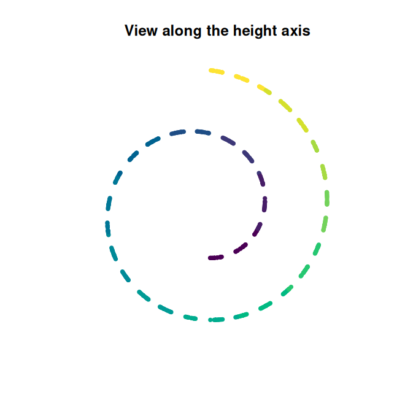
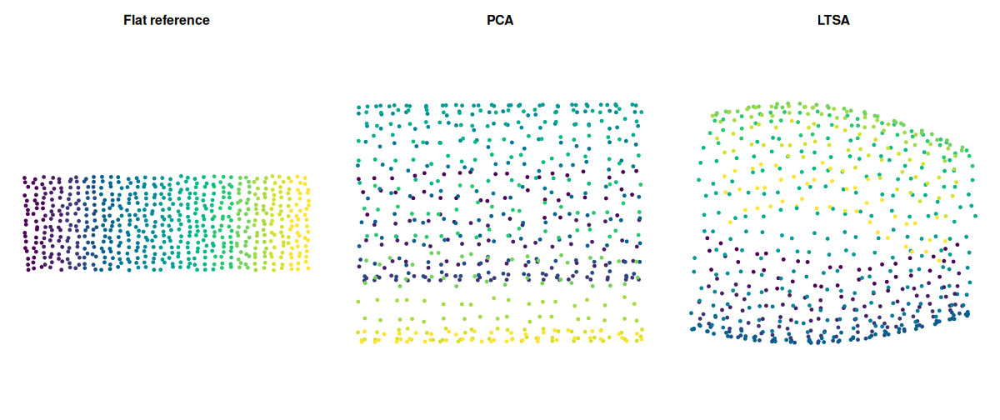
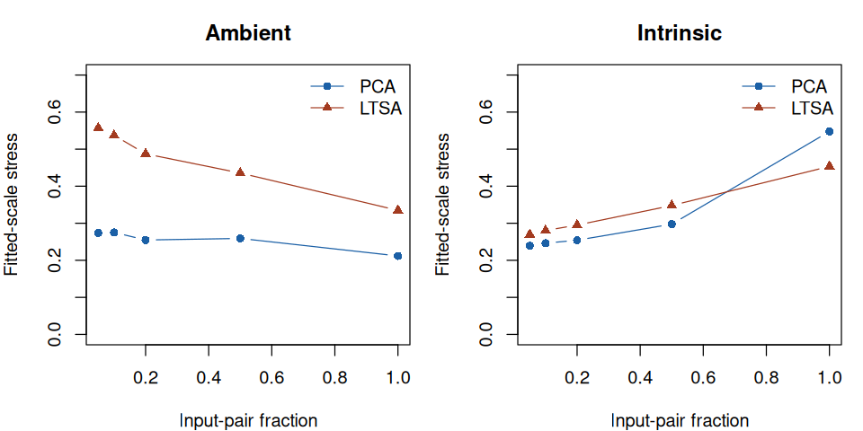
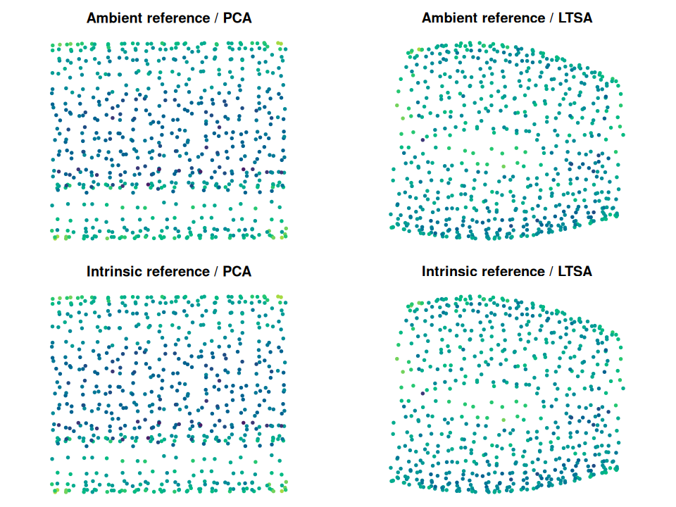
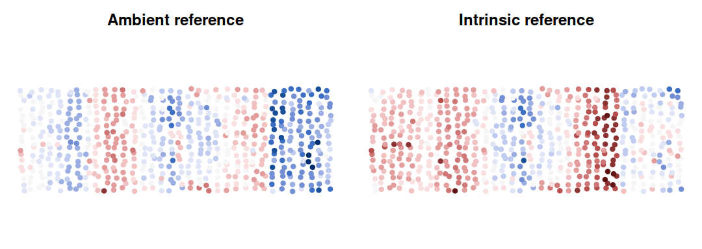
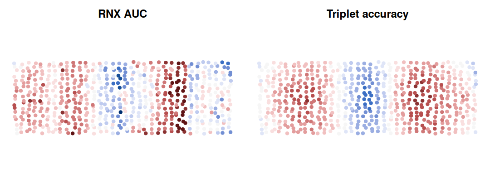
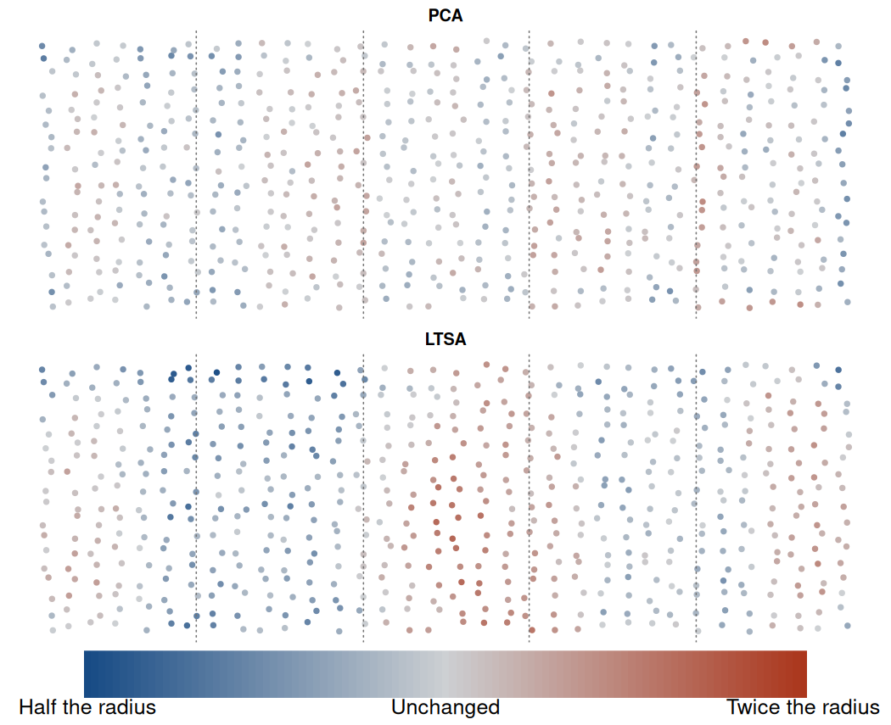
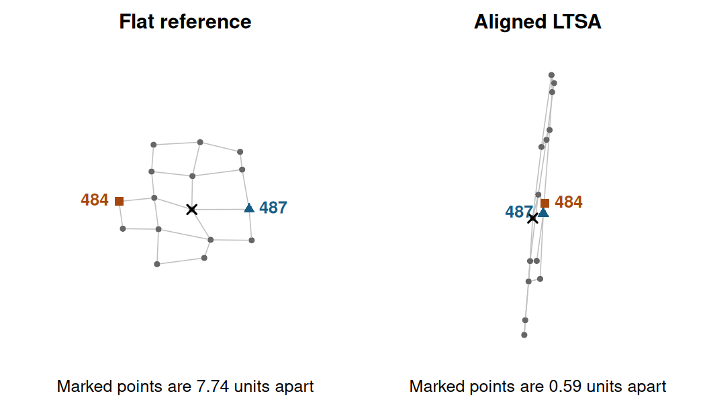
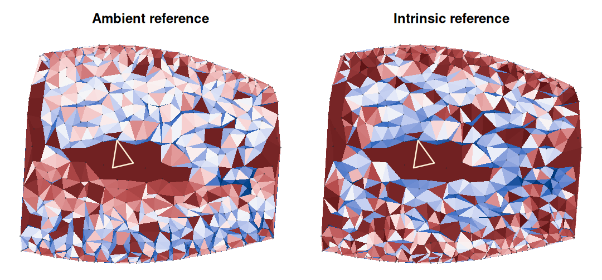

Which distances should a Swiss roll preserve?
Source:vignettes/articles/reference-geometry.Rmd
reference-geometry.RmdWhich distances answer the question?
Two points on neighboring turns of the Swiss roll can be close across the gap and far apart along the sheet. The choice of reference changes which embedding best preserves the ordering of distances.
- How close are the points in 3D? Use straight-line distances between the rolled coordinates (the ambient reference). PCA preserves their ordering better than LTSA.
- How well does the map unroll the sheet? Use distances in the flat arc-length and height coordinates (the intrinsic reference). LTSA preserves their ordering better than PCA.
The all-pairs comparison uses the same embeddings and point pairs for both references. Even against the flat reference, LTSA retains only 46% of the 15 nearest neighbors on average. See how a patch changes shape while keeping eight neighbors.
Make the roll and its flat reference
With this version of quadra installed, you’ll also need
flotsam for LTSA, vizier for the plots and
geometry for the final comparison of triangle areas.
# Run once if the packages are missing:
# install.packages("pak")
# pak::pak(c("jlmelville/flotsam", "jlmelville/vizier", "geometry"))
library(quadra)
set.seed(63)
t_grid <- seq(1.5 * pi, 4.5 * pi, length.out = 2001)
s_grid <- (t_grid * sqrt(1 + t_grid^2) + asinh(t_grid)) / 2
grid <- expand.grid(
s = seq(min(s_grid) + 1.5, max(s_grid) - 1.5, length.out = 34),
h = seq(1, 29, length.out = 18)
)
n <- nrow(grid)
s <- grid$s + runif(n, -0.65, 0.65)
height <- grid$h + runif(n, -0.55, 0.55)
t <- approx(s_grid, t_grid, xout = s)$y
rolled <- cbind(t * cos(t), height, t * sin(t))
flat <- cbind(arc_length = s, height = height)The same row identifies a point in every representation. The formula
for s integrates the speed of the spiral. Arc length and
height share the original length unit. A lightly jittered grid gives
even coverage and avoids sparse patches where neighborhoods can jump
between turns.
vizier::embed_plot(
rolled[, c(1, 3)],
x = s,
color_scheme = "grDevices::Viridis",
title = "View along the height axis",
fixed_aspect = TRUE,
show_axes = FALSE
)
Fit PCA and LTSA
pca <- prcomp(rolled, rank. = 2)$x
ltsa <- flotsam::ltsa(
rolled,
n_neighbors = 15,
nn_method = "exact",
eig_method = "eig",
output = "result"
)
c(status = ltsa$eigen$status, components = ltsa$assembly$component_count)
maps <- list(PCA = pca, LTSA = ltsa$embedding) status components
"ok" "1"
par(mfrow = c(1, 3), mar = c(1, 1, 3, 1))
for (name in c("Flat reference", names(maps))) {
xy <- c(list("Flat reference" = flat), maps)[[name]]
vizier::embed_plot(
xy,
x = s,
color_scheme = "grDevices::Viridis",
title = name,
fixed_aspect = TRUE,
show_axes = FALSE,
cex = 0.9
)
}
Color follows arc length from the inner turn (purple) to the outer turn (yellow).
Change the reference and keep the comparisons fixed
Use every unordered pair here. For larger data, use one sample from
sample_pairs() for both references and both embeddings. For
neighbor overlap we use the shared-neighbor fraction described by Chen and Buja. For
Spearman correlation we use the pair-distance comparison from drnb with all pairs.
references <- list(Ambient = rolled, Intrinsic = flat)
pairs <- t(combn(n, 2))
k <- 15
compare <- function(reference, y) {
c(
pair_spearman = random_pair_distance_correlation(
reference,
y,
pairs = pairs,
method = "spearman",
n_threads = 1
),
neighbor_overlap = mean(nbr_pres(
as.matrix(dist(reference)),
as.matrix(dist(y)),
k
))
)
}
results <- do.call(
rbind,
lapply(names(references), function(ref) {
values <- t(vapply(
maps,
function(y) compare(references[[ref]], y),
numeric(2)
))
data.frame(
reference = ref,
method = rownames(values),
round(values, 3),
row.names = NULL
)
})
)
results reference method pair_spearman neighbor_overlap
1 Ambient PCA 0.864 0.411
2 Ambient LTSA 0.613 0.461
3 Intrinsic PCA 0.336 0.410
4 Intrinsic LTSA 0.590 0.459Switching references reverses the ordering by pair-distance correlation. At 15 neighbors the overlap barely changes for either embedding, and LTSA has the higher overlap under both references.
Compare short and long distances
Does LTSA’s advantage along the surface extend to short distances? In each panel, start with the shortest 5% of pairs in that reference and widen the band until it includes all pairs. PCA and LTSA are scored on the same pairs within a panel. A pair that’s close across a fold might enter the ambient panel well before it enters the intrinsic one. The band comparisons follow Takaeda’s benchmark, including fitted-scale stress.
bands <- c(0.05, 0.1, 0.2, 0.5, 1)
band_results <- lapply(references, function(reference) {
lapply(maps, function(y) {
fit <- random_pair_distance_band_profile(
reference,
y,
bands = bands,
pairs = pairs,
ret_extra = TRUE
)
transform(fit$profile, fitted_scale = fit$fitted_scale)
})
})
par(mfrow = c(1, 2), mar = c(4, 4, 3, 1))
for (ref in names(references)) {
profiles <- band_results[[ref]]
values <- vapply(
profiles,
function(z) z$normalized_stress,
numeric(length(bands))
)
matplot(
bands,
values,
type = "b",
pch = c(16, 17),
lty = 1,
col = c("#1B60A6", "#A33B20"),
ylim = c(0, 0.7),
xlab = "Input-pair fraction",
ylab = "Fitted-scale stress",
main = ref
)
legend(
"topright",
names(profiles),
col = c("#1B60A6", "#A33B20"),
pch = c(16, 17),
lty = 1,
bty = "n"
)
}
PCA has lower fitted-scale stress at all five cutoffs for straight-line distances. Along the surface it still leads at the first four cutoffs. LTSA pulls ahead only when we include every pair. So the full-surface result doesn’t tell us which map better preserves short distances.
Locate the lost neighbors
par(mfrow = c(2, 2), mar = c(0.5, 0.5, 2.5, 0.5))
for (ref in names(references)) {
din <- as.matrix(dist(references[[ref]]))
for (method in names(maps)) {
xy <- maps[[method]]
overlap <- nbr_pres(din, as.matrix(dist(xy)), k)
vizier::embed_plot(
xy,
x = overlap,
color_scheme = "grDevices::Viridis",
limits = c(0, 1),
title = paste(ref, "reference /", method),
fixed_aspect = TRUE,
show_axes = FALSE,
cex = 0.85
)
}
}
Both panels in each row use the same 0–1 scale from purple to yellow.
Compare neighborhood agreement across sizes
Fifteen neighbors is one view of the roll. Does LTSA still come out
ahead if we widen the neighborhood? RNX measures overlap after adjusting
for chance. For each point we can compare the maps at
k = 15, then over the whole RNX curve. Its area (RNX AUC)
gives more weight to smaller neighborhoods. In the table, a win means
LTSA scored higher than PCA for that point. See Lee and
colleagues for RNX and their weighted
summary.
roll_ranks <- lapply(
references,
exact_rank_profiles,
embeddings = maps,
k = k,
mrre = TRUE
)
rnx_differences <- lapply(roll_ranks, function(scores) {
cbind(
rnx15 = scores$LTSA$curve[, 1] - scores$PCA$curve[, 1],
auc = scores$LTSA$auc - scores$PCA$auc
)
})
wins <- t(vapply(rnx_differences, function(d) colMeans(d > 0), numeric(2)))
round(wins, 3) rnx15 auc
Ambient 0.547 0.394
Intrinsic 0.547 0.657
limit <- max(abs(unlist(lapply(rnx_differences, function(d) d[, "auc"]))))
par(mfrow = c(1, 2), mar = c(0.5, 0.5, 2.5, 0.5))
for (ref in names(rnx_differences)) {
vizier::embed_plot(
flat,
x = rnx_differences[[ref]][, "auc"],
color_scheme = "grDevices::Blue-Red 3",
limits = c(-limit, limit),
title = paste(ref, "reference"),
fixed_aspect = TRUE,
show_axes = FALSE,
cex = 1.2
)
}
At k = 15, LTSA has higher overlap for about 55% of
points under either reference. Across sizes, LTSA has higher AUC for
about 39% of points under the ambient reference and 66% under the
intrinsic reference. The maps put both comparisons on the flat roll. Red
favors LTSA, blue favors PCA, and both panels use the same scale
centered at zero.
Where did the nearest surface neighbor go?
LTSA leads on RNX, trustworthiness and continuity at 15 neighbors, and on RNX AUC across sizes. Venna and Kaski’s trustworthiness and continuity penalize new and lost neighbors by their ranks, respectively. Now take the points where all four measures favor LTSA on the surface. What happened to the very closest surface neighbor? Input mean relative rank error (MRRE) gives the greatest weight to a move from first place. We’ll look for points where that changes which map we’d choose. Lee and Verleysen describe MRRE.
neighbor_order <- function(coords, i) {
ids <- seq_len(nrow(coords))[-i]
d2 <- rowSums(sweep(coords[ids, , drop = FALSE], 2, coords[i, ], "-")^2)
ids[order(d2)]
}
roll_errors <- lapply(names(references), function(ref) {
scores <- roll_ranks[[ref]]
p <- scores$PCA
l <- scores$LTSA
ahead <- l$curve[, 1] > p$curve[, 1] &
l$auc > p$auc &
l$trustworthiness[, 1] > p$trustworthiness[, 1] &
l$continuity[, 1] > p$continuity[, 1]
inspect <- which(ahead & l$mrre_input[, 1] > p$mrre_input[, 1])
nearest_rank <- vapply(
inspect,
function(i) {
nearest <- neighbor_order(references[[ref]], i)[1]
vapply(maps, function(y) match(nearest, neighbor_order(y, i)), integer(1))
},
integer(length(maps))
)
median_rank <- apply(nearest_rank, 1, median)
c(
ahead = sum(ahead),
higher_input_error = length(inspect),
higher_output_error = sum(ahead & l$mrre_output[, 1] > p$mrre_output[, 1]),
median_rank
)
})
print(do.call(rbind, setNames(roll_errors, names(references)))) ahead higher_input_error higher_output_error PCA LTSA
Ambient 146 29 2 4 11
Intrinsic 209 29 1 4 11On the flat reference, 29 of the 209 queries that favor LTSA on all four scores have higher input MRRE in LTSA. For those 29 queries, the nearest surface neighbor has a median rank of 11 in LTSA and 4 in PCA. The ambient reference gives the same two medians for its own set of 29 queries. Average continuity near 0.985 for both maps at this size can coexist with substantial movement of the closest neighbor.
Check distance ordering from each anchor
Use one triplet sample for both embeddings and reference geometries. For each anchor, compare the order of distances to the same sampled endpoints. Keep 512 comparisons per anchor to limit sampling noise in the map. Wang and colleagues use triplet accuracy to evaluate distance ordering in embeddings.
set.seed(421)
anchor_triplets <- sample_triplets(nrow(flat), n_triplets = 512)
triplet_differences <- lapply(references, function(reference) {
scores <- lapply(maps, function(y) {
random_triplet_accuracy(
reference,
y,
triplets = anchor_triplets,
by_anchor = TRUE,
n_threads = 1
)$by_anchor$accuracy
})
scores$LTSA - scores$PCA
})
outer <- s > min(s) + 0.8 * diff(range(s))
round(
t(vapply(
names(references),
function(ref) {
c(
triplet_accuracy = mean(triplet_differences[[ref]][outer]),
rnx_auc = mean(rnx_differences[[ref]][outer, "auc"])
)
},
numeric(2)
)),
3
) triplet_accuracy rnx_auc
Ambient -0.261 -0.237
Intrinsic 0.118 -0.044
scores <- list(
"RNX AUC" = rnx_differences$Intrinsic[, "auc"],
"Triplet accuracy" = triplet_differences$Intrinsic
)
limit <- max(abs(unlist(scores)))
par(mfrow = c(1, 2), mar = c(0.5, 0.5, 2.5, 0.5))
for (metric in names(scores)) {
vizier::embed_plot(
flat,
x = scores[[metric]],
color_scheme = "grDevices::Blue-Red 3",
limits = c(-limit, limit),
title = metric,
fixed_aspect = TRUE,
show_axes = FALSE,
cex = 1.2
)
}
On the outer fifth of the roll by arc length, LTSA has lower mean intrinsic RNX AUC and retains fewer of its 15 nearest neighbors. Its mean triplet accuracy there is about 0.12 higher. The maps use the intrinsic reference and put the outer end at the right. Red favors LTSA, blue favors PCA, and both use the same scale centered at zero.
Where does the neighborhood radius shrink or grow?
Calibrate each map once using the fitted multiplier from its full intrinsic distance band. For each query, measure the distance to the 15th neighbor in each space. A radius ratio of one means unchanged local scale. Taking the base-two logarithm gives a halving and a doubling equal weight on opposite sides of zero. Narayan, Berger and Cho also compare local radii when assessing density preservation.
multipliers <- vapply(
band_results$Intrinsic,
function(z) z$fitted_scale[z$band == 1],
numeric(1)
)
radii <- Map(
function(y, multiplier) {
local_radius_correlation(
flat,
y * multiplier,
k = k,
nn_method_in = "brute",
metric_in = "euclidean",
metric_out = "euclidean",
ret_extra = TRUE
)
},
maps,
multipliers
)
ratio <- lapply(radii, function(r) r$scale_out[, 1] / r$scale_in[, 1])
fifth <- cut(
s,
quantile(s, seq(0, 1, by = 0.2)),
include.lowest = TRUE,
labels = FALSE
)
median_ratio <- sapply(ratio, function(z) tapply(z, fifth, median))
ltsa_overlap <- nbr_pres_knn(radii$LTSA$nn_in$idx, radii$LTSA$nn_out$idx, k)
round(cbind(median_ratio, LTSA_overlap = tapply(ltsa_overlap, fifth, mean)), 2) PCA LTSA LTSA_overlap
1 0.93 0.93 0.43
2 1.03 0.80 0.42
3 0.96 1.22 0.50
4 1.05 0.96 0.50
5 1.01 1.02 0.45
palette <- colorRampPalette(c("#174B85", "#CDD0D3", "#AB361C"))(101)
layout(matrix(1:3), heights = c(1, 1, 0.24))
par(mar = c(0.3, 0.5, 1.8, 0.5))
for (method in names(ratio)) {
value <- log2(ratio[[method]])
colors <- palette[1L + round(50 * (1 + pmax(-1, pmin(1, value))))]
vizier::embed_plot(
flat,
colors = colors,
fixed_aspect = TRUE,
show_axes = FALSE,
title = method,
cex = 1.2
)
abline(v = quantile(s, c(0.2, 0.4, 0.6, 0.8)), col = "grey45", lty = 3)
}
par(mar = c(1.6, 5, 0.2, 5))
image(
seq(-1, 1, length.out = 101),
1,
matrix(1:101),
col = palette,
axes = FALSE,
xlab = "",
ylab = ""
)
mtext(
c("Half the radius", "Unchanged", "Twice the radius"),
side = 1,
at = -1:1,
line = 0.15
)
Read the strips from the inner end on the left. In LTSA the second strip has a median radius ratio of 0.80 and the middle strip 1.22. The next strip has a median ratio of 0.96, even though both it and the middle strip retain about half their neighbors. PCA’s strip medians stay between 0.93 and 1.05. Each space chooses its own neighbors for this radius measurement.
Compare local shape after alignment
Neighbor overlap counts retained neighbors. To look at their shape, select the 15 nearest neighbors of each point in the flat reference and carry the same row IDs into each embedding. Calibrate each embedding once using all pair distances, then fit rotation or reflection and translation within each patch. This leaves patch-by-patch stretch visible. The matched patches follow Goldberg and Ritov’s local Procrustes measure. Quadra uses a fixed-scale residual.
reference_graph <- radii[[1]]$nn_in
inspect_shape <- function(y, multiplier, r) {
shape <- local_procrustes(
flat,
y * multiplier,
k = k,
nn_in = reference_graph,
ret_extra = TRUE
)
i <- which.max(shape$pointwise_error)
overlap <- nbr_pres_knn(reference_graph$idx, r$nn_out$idx, k)
c(
row = i,
patch_error = shape$pointwise_error[i],
overlap = overlap[i],
radius_ratio = unname(r$scale_out[i, 1] / r$scale_in[i, 1])
)
}
round(do.call(rbind, Map(inspect_shape, maps, multipliers, radii)), 3) row patch_error overlap radius_ratio
PCA 585 1.007 0.600 0.952
LTSA 486 1.105 0.533 0.954patch_error divides the squared alignment residual by
the reference patch’s centered sum of squares. radius_ratio
compares the 15th-neighbor distances after calibration.
Both worst patches retain over half their neighbors and have a local radius close to the reference. The matched coordinates still differ substantially after alignment.
Rows 484 and 487 are both among row 486’s 15 nearest neighbors in each space. Use the same 16 points in both panels, with the LTSA coordinates calibrated as above. Center each patch and rotate or reflect LTSA into the reference frame. The gray lines join adjacent grid positions from the original roll. Following the same lines in both panels makes the change in shape visible.
Align and draw the patch around point 486
anchor <- 486L
ids <- c(anchor, reference_graph$idx[anchor, ])
a <- scale(flat[ids, ], scale = FALSE)
b <- scale(maps$LTSA[ids, ] * multipliers["LTSA"], scale = FALSE)
fit <- svd(crossprod(b, a))
aligned <- b %*% fit$u %*% t(fit$v)
patches <- list("Flat reference" = a, "Aligned LTSA" = aligned)
lattice <- cbind(match(grid$s, unique(grid$s)), match(grid$h, unique(grid$h)))
steps <- as.matrix(dist(lattice[ids, ], method = "manhattan"))
edges <- which(steps == 1 & lower.tri(steps), arr.ind = TRUE)
focus <- match(c(484, 487), ids)
ink <- c("#A54810", "#165D85")
xlim <- extendrange(c(a[, 1], aligned[, 1]), f = 0.18)
ylim <- extendrange(c(a[, 2], aligned[, 2]), f = 0.08)
par(mfrow = c(1, 2), mar = c(2.2, 1.3, 2.1, 0.4))
for (name in names(patches)) {
xy <- patches[[name]]
vizier::embed_plot(
xy,
colors = "grey40",
title = name,
xlim = xlim,
ylim = ylim,
show_axes = FALSE,
fixed_aspect = TRUE
)
from <- edges[, 1]
to <- edges[, 2]
segments(xy[from, 1], xy[from, 2], xy[to, 1], xy[to, 2], col = "grey75")
points(xy, pch = 16, col = "grey40", cex = 0.75)
points(xy[1, , drop = FALSE], pch = 4, lwd = 2, cex = 1.2)
points(xy[focus, ], pch = c(15, 17), col = ink, cex = 1.15)
text(
xy[focus, ],
labels = ids[focus],
col = ink,
font = 2,
pos = if (name == "Flat reference") c(2, 4) else c(4, 2)
)
mtext(
sprintf("Marked points are %.2f units apart", dist(xy[focus, ])),
side = 1,
line = 0.4
)
}
The cross marks query 486. Its 15th-neighbor radius changes by less than 5%, but rows 484 and 487 move from 7.74 units apart on the surface to 0.59 in calibrated LTSA. Both remain neighbors of the query. The change is in their placement within its patch.
Inspect area changes between observations
Use Gap Index to compare the open regions in the LTSA scatterplot
under both reference geometries. The embedding determines the triangles,
so both maps use the same vertices. This example requires the
geometry package. The index is due to Ros, Arleo and Paulovich,
who provide an implementation.
gap_maps <- lapply(references, function(reference) {
gap_index(reference, maps$LTSA, ret_extra = TRUE)
})
round(vapply(gap_maps, function(result) result$gap_index, numeric(1)), 3)
stopifnot(identical(gap_maps$Ambient$triangles, gap_maps$Intrinsic$triangles))
intrinsic <- gap_maps$Intrinsic
largest <- which.max(intrinsic$relative_area_out - intrinsic$relative_area_in)
vertices <- intrinsic$triangles[largest, ]
ltsa_rnx <- roll_ranks$Intrinsic$LTSA$auc
expanded <- gap_maps$Ambient$deformation < 0 & intrinsic$deformation > 0
round(
c(
intrinsic_deformation = intrinsic$deformation[largest],
triangle_vertex_rnx = mean(ltsa_rnx[vertices]),
mean_rnx = mean(ltsa_rnx),
percent_area_flipping_to_expansion = 100 *
sum(intrinsic$relative_area_out[expanded])
),
3
) Ambient Intrinsic
0.518 0.590
intrinsic_deformation triangle_vertex_rnx
0.939 0.474
mean_rnx percent_area_flipping_to_expansion
0.355 16.163
xy <- maps$LTSA
triangle_rows <- c(t(cbind(intrinsic$triangles, NA_integer_)))
colors <- hcl.colors(101, "Blue-Red 3")
par(mfrow = c(1, 2), mar = c(0.6, 0.6, 2.7, 0.6))
for (ref in names(gap_maps)) {
fill <- colors[round(50 * (1 + gap_maps[[ref]]$deformation)) + 1L]
plot(
xy,
type = "n",
asp = 1,
axes = FALSE,
xlab = "",
ylab = "",
main = paste(ref, "reference")
)
polygon(xy[triangle_rows, 1], xy[triangle_rows, 2], col = fill, border = NA)
points(xy, pch = 16, cex = 0.28, col = "#20262F90")
polygon(xy[vertices, , drop = FALSE], border = "#FFF2D9", lwd = 2)
}
The outlined triangle opens into the central gap. Its intrinsic deformation is 0.94, and its vertices have higher mean RNX AUC than the embedding as a whole. Switching from ambient to intrinsic geometry also changes the direction of deformation on 16% of plotted area from compression to expansion. Both panels use the same scale, with red for expansion and blue for compression.